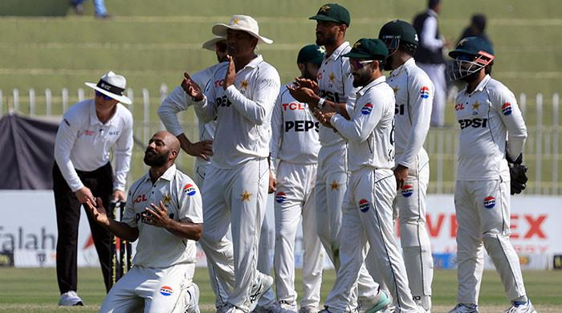

Pakistan thump England to win third Test, claim series by 2-1
Pakistan clinch first home Test series win in almost three and a half years

PCB hands white-ball captaincy to Mohammad Rizwan
Black Day': President, PM reiterate support for Kashmiris' right to self-determination
Security forces kill four terrorists in two separate KP IBOs
42,924 Palestinians killed Israel's offensive on Gaza
Finance minister reports constructive meetings with stakeholders in US
Finance minister reports constructive meetings with stakeholders in US
Finance minister reports constructive meetings with stakeholders in US
Finance minister reports constructive meetings with stakeholders in US
Finance minister reports constructive meetings with stakeholders in US
Finance minister reports constructive meetings with stakeholders in US